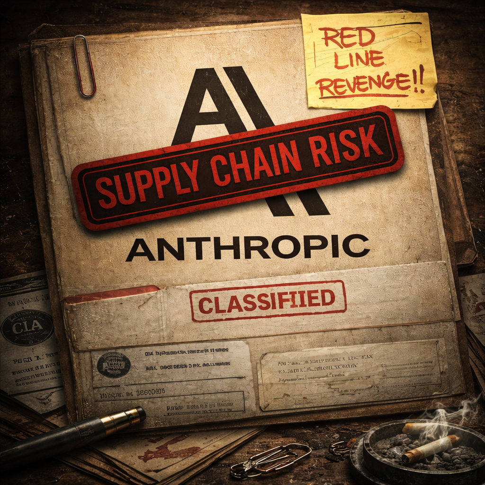
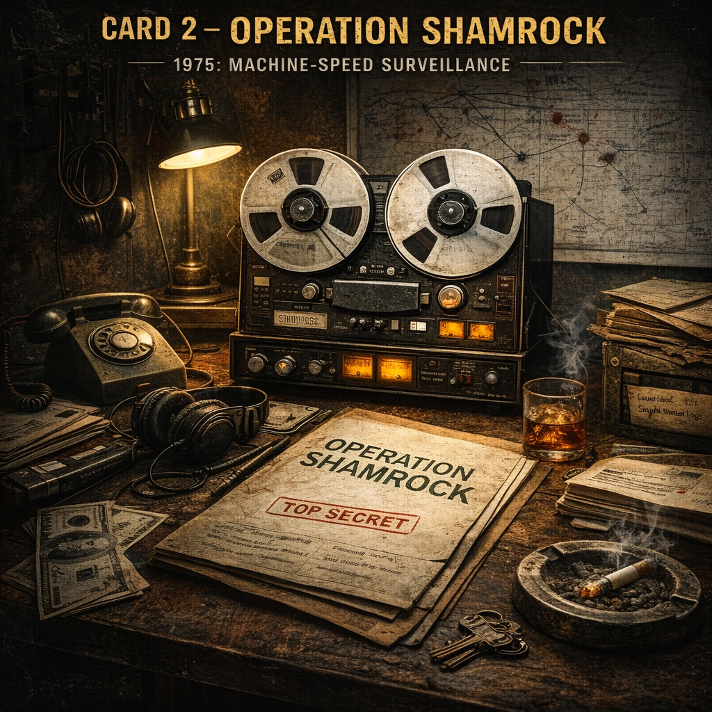
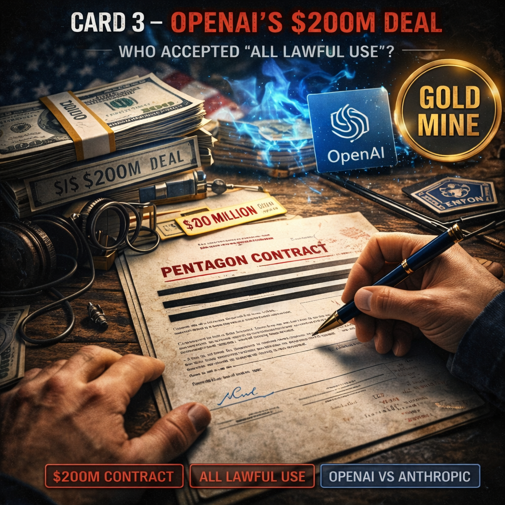
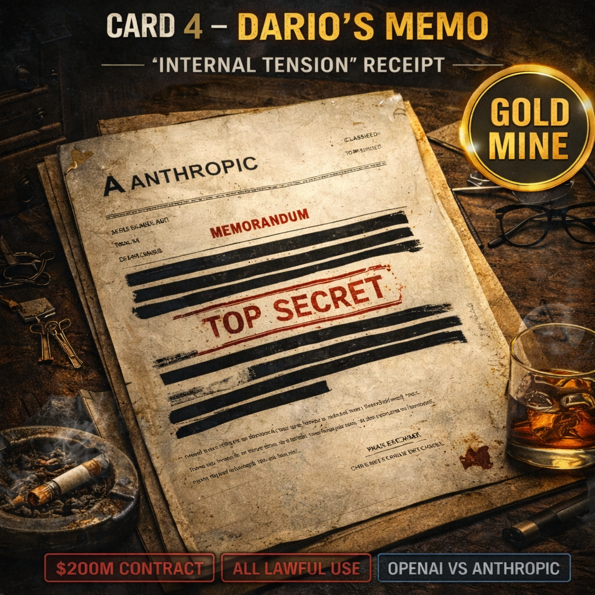

CARD 1
THE BLACKLIST
Punished for saying NO to mass surveillance.
Information Tapas: Declassified Receipts from March 2026 and 1975

CARD 1
Punished for saying NO to mass surveillance.

CARD 2
1975’s abyss. Machine-speed surveillance.

CARD 3
Who accepted “all lawful use”?

CARD 4
Internal tension behind the corporate machine.
Feb 27: OpenAI Deal
OpenAI Deal as communication tool
Feb 27: OpenAI Deal
OpenAI accepted “blanket for lawful” mass surveillance
1978: FISA Act
Recommendable machines and maintains surveillance
1978: FISA Act
1975 has machine-speed surveillance